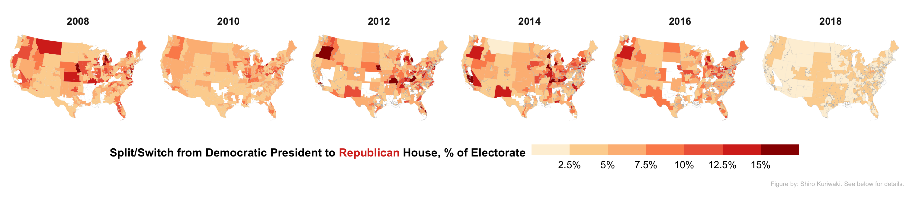

<div class="wrapper">
  <section>
    <div align="left">
      
      
    </div>

    <div align="left">
      <h3>Publications</h3>
    </div>
    <p>
      <ul class="dashed">
        <li><a href="https://doi.org/10.31235/osf.io/zuskq"> Congressional Representation: Accountability from the Constituent’s Perspective.</a> (with Stephen Ansolabehere). Accepted, <i>American Journal of Political Science</i></li>
        <details>
          <summary>Abstract</summary>
          The premise that constituents hold representatives accountable for their legislative decisions undergirds political theories of democracy and legal theories of statutory interpretation. But studies of this at the individual level are rare, examine only a handful of issues, and arrive at mixed results. We provide an extensive assessment of issue accountability at the individual level. We trace the congressional rollcall votes on 44 bills across seven Congresses (2006-2018), and link them to constituent's perceptions of their representative's votes and their evaluation of their representative.  Correlational, instrumental variables, and experimental approaches all show that constituents hold representatives accountable. A one-standard deviation increase in a constituent's perceived issue agreement with their representative can improve net approval by 35 percentage points.  Congressional districts, however, are heterogeneous. Consequently, the effect of issue agreement on vote is much smaller at the district-level, resolving an apparent discrepancy between micro and macro studies.
        </details>

        <li><a href="https://doi.org/10.1017/S0003055419000170">Wealth, Slave Ownership, and Fighting for the Confederacy: An Empirical Study of the American Civil War.</a> 2019. (with Andrew B. Hall and Connor Huff). <i>American Political Science
          Review</i>, 113 (3): 658-673. [Replication Data <a href="https://doi.org/10.7910/DVN/RRBPUD" class="is-icon"><i class="ai ai-dataverse"></i></a>] [Coverage by <a
          href="https://www.iheart.com/podcast/8-voxs-the-weeds-27868384/episode/building-the-trump-state-43587864/">The Weeds</a> podcast].</li>
          <details><summary>Abstract</summary>
            <p>How did personal wealth and slaveownership affect the likelihood Southerners fought for the Confederate Army in the American Civil War? On the one hand, wealthy Southerners had incentives to free-ride on poorer Southerners and avoid fighting; on the other hand, wealthy Southerners were disproportionately slaveowners, and thus had more at stake in the outcome of the war. We assemble a dataset on roughly 3.9 million free citizens in the Confederacy and show that slaveowners were more likely to fight than non-slaveowners. We then exploit a randomized land lottery held in 1832 in Georgia. Households of lottery winners owned more slaves in 1850 and were more likely to have sons who fought in the Confederate Army. We conclude that slaveownership, in contrast to some other kinds of wealth, compelled Southerners to fight despite free-rider incentives because it raised their stakes in the war’s outcome.</p>
          </details>
          <li><a href="https://gking.harvard.edu/files/gking/files/prefresher.pdf"> The "Math Prefresher" and The Collective Future of Political Science Graduate Training. </a> (with Gary King and Yon Soo Park). <i>PS: Political Science and Politics</i>, 54(3): 537-541.</li>
          <details><summary>Abstract</summary>
            <p>The political science math prefresher arose a quarter-century ago and has now spread to many of our discipline’s PhD programs. Incoming students arrive for graduate school a few weeks early for ungraded instruction in math, statistics, and computer sci-ence  as  they  relate  to  political  science.  The  prefresher’s  benefits,  however,  go  beyond  its  technical content: it opens pathways to mastering methods necessary for political science research, facilitates connections among peers, and &mdash; perhaps most important &mdash; eases the transition to the increasingly collaborative nature of graduate work. The prefresher also shows how faculty across a highly diverse discipline have worked together to train the next generation. We review this program and advance its collaborative aspects by building infrastructure to share teaching content across universities so that separate programs can build on one another’s work and improve all of our programs.</p></details>
          </ul>
        </p>


        <div align = "left">
          <h3>Job Market Paper </h3>
        </div>
        <p>
          <ul class = "dashed">
            <li> <b>Ticket Splitting in a Nationalized Era. </b>
              [Earlier <a href="https://osf.io/preprints/socarxiv/bvgz3/">version</a>, titled "Party Loyalty on the Long Ballot: Is Ticket Splitting More Prevalent in State and Local Elections?" covered by  <a href="https://perma.cc/V83G-X9US"><i>The Post and Courier</i></a>, <a href="https://perma.cc/L4AV-2SWG "><i>Governing</i>, <a href="https://perma.cc/PH22-GDS7"><i>Colorado Public Radio News</i></a>].</li>
              <details><summary>Abstract</summary>
                <p>Many believe that party loyalty in U.S. elections has reached heights unprecedented in the post-war era, although this finding relies on evidence from presidential, congressional, and gubernatorial elections. If party labels are a heuristic, we would expect  party-line voting to be even more dominant in lower-information elections. Yet, here I show that the prevalence of ticket splitting in state and local offices is often similar to or higher than in national offices because of larger incumbency advantages and starker candidate valence differentials. Because neither surveys nor election returns have been able to reliably measure individual vote choice in downballot races, I introduce an underused source of voter data: cast vote records. I create a database from voting machines that reveals the vote choices of 6.6 million voters for all offices on the long ballot, and I design a clustering algorithm tailored to such ballot data. In contrast to ticket splitting rates of 5 to 7 percent in US House races, about 15 to 20 percent of voters split their ticket in a modal Sheriff race. Even in a nationalized politics, a fraction of voters still cross party lines to vote for the more experienced candidate in state and local elections.</p>
              </details>
            </ul>
          </p>

          <div align="left">
            <h3>Selected Working Papers</h3>
          </div>
          <p>
            <ul class="dashed">
              <li>Towards Principled Unskewing: Viewing 2020 Election Polls Through a Corrective Lens from 2016. (with Michael Isakov). <i>Revised and Resubmitted, Harvard Data Science Review</i></li>
              <details><summary>Abstract</summary>
                We apply the concept of the data defect index \citep{MengAOAS} to study the potential impact of systematic errors on the 2020 pre-election polls in twelve Presidential battleground states. We investigate the impact under the hypothetical scenarios that (1) the magnitude of the underlying non-responses bias correlated with supporting Donald Trump is similar to that of the 2016 polls, (2) the pollsters' ability to correct systematic errors via weighting has not improved significantly, \add{and (3) turnout levels remain similar as 2016.} Because survey weights are crucial for our investigations but are often not released, we adopt two approximate methods under different modeling assumptions.  \add{Under these scenarios, which may be far from reality, our models shift Trump's estimated two-party voteshare by a percentage point in his favor in the median battleground state, and increases twofold the uncertainty around the voteshare estimate.}
              </details>
              <li><a href="https://doi.org/10.31219/osf.io/v3rhz">A Clustering Approach for Characterizing Voter Types: An Application to High-Dimensional Ballot and Survey Data</a></li>
              <details><summary>Abstract</summary>
                Large-scale ballot and survey data hold the potential to uncover the prevalence of swing voters and strong partisans in the electorate. However, existing approaches either employ exploratory analyses that fail to fully leverage the information available in high-dimensional data, or impose a one-dimensional spatial voting model. I derive a clustering algorithm which better captures the probabilistic way in which theories of political behavior conceptualize the swing voter. Building from the canonical finite mixture model, I tailor the model to vote data, for example by allowing uncontested races. I apply this algorithm to actual ballots in the Florida 2000 election and a multi-state survey in 2018. In Palm Beach County, I find that up to 60 percent of voters were straight ticket voters; in the 2018 survey, even higher. The remaining groups of the electorate were likely to cross the party line and split their ticket, but not monolithically: swing voters were more likely to swing for state and local candidates and popular incumbents.
              </details>
              <li><a href="https://scholar.harvard.edu/files/dtingley/files/sparsemultilevel.pdf">Sparse Multilevel Regression (and Poststratification).</a> (with Max Goplerud, Marc Ratkovic, and Dustin Tingley).</li>
              <details><summary>Abstract</summary>
              Multilevel models have long played an important role in a variety of social sciences.  We extend this framework by bringing to bear recent developments in the machine learning literature to allow for considerable flexibility.  We introduce a sparse regression framework that covers both  the  linear  case  as  well  as  a  logit  model  for  binary  outcome  data.   We  leverage  recent computational tricks based on data-augmentation to dramatically speed up estimation times with equal or better performance compared to existing approaches.  We apply our model in the context of multilevel modelling with post-stratification which has become a common tool for survey researchers.
              </details>

            </ul>
          </p>


          <div align="left">
            <h3>Cast Vote Records</h3>
          </div>
          <p>
            The cast vote records project is collecting and organizing public ballot image logs to advance the understanding of voting patterns in federal, state and local elections. One of the project's goals is to establish a relational database for such
            data. This project is one of the 2018 <a href="http://electionlab.mit.edu/node/75">New Initiative Grants</a> from the MIT Election Data and Science Lab. Please feel free to contact me for any questions about this project. Fore more information,
            see the associated <a href="https://doi.org/10.31235/osf.io/bvgz3">empirical paper</a> or the memo on the <a href="papers/kuriwaki_cvr-supp.pdf">election administration</a> of cast vote records.
          </p>


          <div align="left">
            <h3>Teaching</h3>
          </div>

          <p>
            I have taught classes on American Politics, statistics, and programming, at the undergraduate, Masters, and PhD level. I received the 2020 <a href="https://www.hks.harvard.edu/more/events/honoring-class-2020/class-day-awards">Dean's Excellence in Teaching Award</a> at the Harvard Kennedy School of Public Policy for my teaching in econometrics and shepherding the use of the R statistical language in its core statistics sequence. This work included creating portable <a href="screencasts">screencasts of R workflows</a>, covering common topics in econometrics, causal inference, data science, quantitative social science.
          </p>


          <p>
            I've also presented on teaching <a
            href="https://vimeo.com/channels/1591675">project-oriented workflow</a> (invited presentation, Toronto Data Workshop), introduction to <a href="programming/kuriwaki_github_handout.pdf">version control with GitHub</a> (<a
            href="https://github.com/kuriwaki/github-demo">source</a>), introduction to <a href="https://www.shirokuriwaki.com/programming/api201z_stata.html">Stata</a> (<a href="https://github.com/kuriwaki/stata-notes">source</a>), and statistics notes
            covering <a href="https://github.com/kuriwaki/stats-notes/raw/master/01_probability.pdf">Probability</a>, <a href="https://github.com/kuriwaki/stats-notes/raw/master/02_inference.pdf">Inference</a>, and <a
            href="https://github.com/kuriwaki/stats-notes/raw/master/03_regression.pdf">Regression</a> written for a Masters-level statistics course (<a href="https://github.com/kuriwaki/stats-notes">source</a>).
          </p>


          <div align="left">
            <h3>Datasets</h3>
          </div>
          <p>
            <ul class="dashed">
              <li> The <a href="https://doi.org/10.7910/DVN/II2DB6">Cumulative CCES Common Content (2006-2019)</a> is a part of the Cooperative Congressional Election Survey Dataverse. It combines all common content respondents of the CCES and harmonizes key
                variables, so that researchers can analyze all years of the CCES or merge in standardized variables with their own CCES datasets.</li>
              <li> <a href="https://www.shirokuriwaki.com/ccesMRPprep/">Portable Routines for Preparing CCES and ACS data for MRP</a> is a set of datasets and API interfaces to facilitate Multilevel Regression Poststratification (MRP), a survey weighting method for small area estimation.  Other articles already provide helpful tutorials and code for MRP. But implementing a MRP entails considerable upfront costs related to data  collection, cleaning, and standardization. This package provides these routines: not only modeling software, but code to import and standardize publicly available data sources, combined with detailed documentation about these data sources. </li>
              </ul>
            </p>

            <hr>

            <p><small>
              <b>About the banner image:</b> Survey data from the <a href="https://doi.org/10.7910/DVN/II2DB6">Cumulative CCES</a>, limited to validated voters in contested districts who voted for a major party in the Presidency and House. Estimates are
              made at the congressional district level and use Multilevel Regression Poststratification (<a href="https://www.shirokuriwaki.com/ccesMRPprep/">MRP</a>) stratifying on age, gender, education from the ACS and using House candidate incumbency
              status and presidential voteshare as district-level predictors. In presidential years the values represent ticket splitting (e.g. Trump voters who voted for a 2016 Democratic House candidate); in midterm years they represent party switch from
              the previous presidential election (e.g. Trump voters who voted for a 2018 Democratic House candidate). Districts where a Democrat and Republican candidate did not contest the general election are left blank. <i>Figure created by Shiro
                Kuriwaki.</i>
              </small></p>
              <p><small>
                <b>About this website:</b> The design uses the Github Pages <a href="https://github.com/orderedlist/minimal">minimal theme</a>, uses some CSS from Matt Blackwell's website at the time, and is inspired by Sarah Bouchat's <a
                href="https://bouchat.github.io/">website</a> and Andrew Hall's <a href="http://www.andrewbenjaminhall.com/">website</a>.
              </small></p>

            </section>
          </div>
